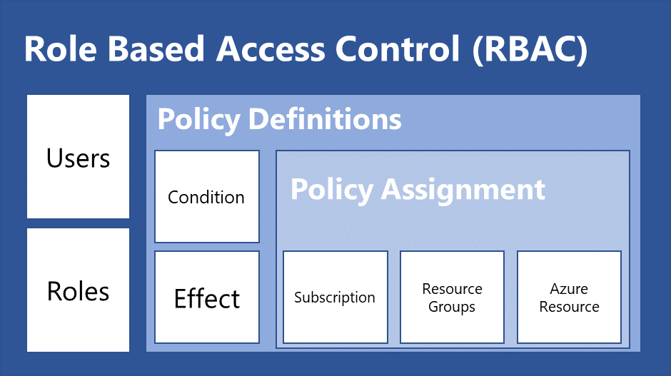

Azure
orientation
- information on service: Look into the FAQ
- general health of service: Service Health
- availability of service
- automatic analysis of resources: advisor recommendations
- create graphic: Resource Visualizer (part of Resource Group)
- IaC:
- Azure Resource Manager templates (ARM templates)
- can be used to be copie to pulumi azure native provider
- UI Azure Portal: in most resources under 'Export template'
- CLI az:
az <service> list <resourcename>az <service> show <resourcename>- sometimes as yaml:
az <service> export <resourcename>
- audit and see erros in deployment: Monitor | Activity log
- AWS to Azure services comparison
terms
- directory: company
- tenant id belongs to directory
- subscription: part of a directory
- account: me and belongs to one or more directory and has access to one or more subscriptions
- Object Id = principal id
- Object Id != client id
- application ≈ managed identity ≈ service principal
az login
az account list
e --subscription=<id>
scopes
RBAC and Policies can be applied to:
- management groups
- subscriptions
- resource groups
- individual resources.
Lower levels inherit settings from higher levels.
management groups
Management groups provide a governance scope above subscriptions. You organize subscriptions into management groups; the governance conditions you apply cascade by inheritance to all associated subscriptions.
generate graphics
Use https://github.com/microsoft/ARI
azure policy vs. azure rbac (governence)
- Azure RBAC - manages who has access to Azure resources, what areas they have access to and what they can do with those resources.
- Azure Policy – focus on resource properties during deployment and for already existing resources. They are able to block or allow specific values for the properties or add properties like tags after deployment.

Source: Governance 101: The Difference Between RBAC and Policies
collect logging in resource group
If you want to access all logs on resource group level you need to create a log analytic workspace.
Container apps vs container instances
Use container apps when you
- need autoscaling
- want easy loadbalancer integration (each app separately) with azure domain (or custom domain)
Postgres single server vs flex
Flexible server
- recommended service according to azure portal
- newer postgres versions available
- zone replication
blob vs container
Blob are grouped in containers. Containers belong to storage accounts.
list region/location codes
Run az account list-locations -o table or look here
create service account for pulumi/terraform in pipeline:
See here or:
#!/usr/bin/env bash
set -e
SUBSCRIPTION=
NAME=XXXX-pipeline-service-principal
YEARS=10
az ad sp create-for-rbac --name="${NAME}" --role="Contributor" --scopes="/subscriptions/${SUBSCRIPTION}" --years=$YEARS --sdk-auth > .localsecret_pipeline
## to get information on user
# az ad sp list --display-name=${NAME}
## reset password and print it (if old password is lost)
# az ad sp credential reset --name=${NAME}
## delete service principal
# az ad sp delete --id 00000000-0000-0000-0000-00000000000000000
managed identities
Managed identities are an alternative to credentials. They are bound to a resource and allow the resource to interact with other resources with the rights of the identity (similar to aws roles).
- System-assigned: identities are created by azure and the lifecycle is bound to the resource in which it was created (e.g. the container app)
- User-assigned: configure a service principal for the resource. Lifecycle is controled by user.
azure exctensions
Some commands az containerapp do not run out of the box. You need to install the extension to use it.
# list extensions and see if they are installed
az extension list-available --output table
# add containerapp extension
az extension add --name containerapp
see arm template of resource with az
az containerapp connection list
app registration vs enterprise app / service principal
blog article Create service principal in UI
Container apps comunication
Online as well as communication between to container apps need to use the ingress. You can choose if ingress is public available or only for other container apps.
The url is: CONTAINER_APP_NAME.CONTAINER_APP_ENV_NAME.REGION_NAME.azurecontainerapps.io E.g. can be look like this: app.kindflower-050d0634.germanywestcentral.azurecontainerapps.io
Every container app revision got an URL as well. This URL contains the revision name as subdomain instead of the conainter app name.
container app debugging
It may happen that a container is killed but you got no log entry other than "killed".
Troubleshooting:s set the memory and cpu to max (or check in metrics if the memory metric is too high before it collapesesz
pipelines user for az and pulumi
How to create and use a service principal
az ad sp create-for-rbac --name="myapp-service-principal" --role="Contributor" --scopes="/subscriptions/BLA" --years=10 --sdk-auth
Create sp with --sdk-auth flag so your output looks something like this. Action does not work with the normal outoput of four properties.
{
"clientId": "",
"clientSecret": "",
"subscriptionId": "",
"tenantId": "",
"activeDirectoryEndpointUrl": "",
"resourceManagerEndpointUrl": "",
"activeDirectoryGraphResourceId": "",
"sqlManagementEndpointUrl": "",
"galleryEndpointUrl": "",
"managementEndpointUrl": ""
}
```
### example for az
Add the following to a Action Secret `AZURE_CREDENTIALS`:
Pipeline example:
```yaml
name: Deploy Backend feat
on:
push:
branches:
- azure-env
paths:
- 'graphql_backend/**/*'
- '.github/workflows/azure-feat-backend.yml'
env:
AZURE_REGISTRY_USERNAME: myapp
REGISTRY: myapp.azurecr.io
REPOSITORY: myapp-2834-repo
IMAGE_TAG: backend-${{github.sha }}
AZURE_RESOURCE_GROUP: dev-myapp322577c2
AZURE_CONTAINER_APP_NAME: dev-myapp-app-backend
jobs:
build:
name: Build Backend
runs-on: ubuntu-latest
environment: dev
steps:
- name: Checkout
uses: actions/checkout@v3
- uses: azure/docker-login@v1
with:
login-server: ${{ env.REGISTRY }}
username: ${{ env.AZURE_REGISTRY_USERNAME }}
password: ${{ secrets.AZURE_REGISTRY_PASSWORD }}
- name: Build, tag, and push Backend container registry
id: build-image-backend
run: |
docker build -t ${{ env.REGISTRY }}/${{ env.REPOSITORY}}:${{ env.IMAGE_TAG }} graphql_backend
docker push ${{ env.REGISTRY }}/${{ env.REPOSITORY}}:${{ env.IMAGE_TAG }}
echo "::set-output name=image::${{ env.REGISTRY }}/${{ env.REPOSITORY}}:${{ env.IMAGE_TAG }}"
deploy:
name: Deploy Backend
runs-on: ubuntu-latest
environment: dev
needs: build
steps:
- name: Azure Login
uses: azure/login@v1
with:
creds: ${{ secrets.AZURE_CREDENTIALS }}
- name: Deploy to containerapp
uses: azure/CLI@v1
with:
inlineScript: |
echo "Installing containerapp extension"
az extension add --name containerapp
az config set extension.use_dynamic_install=yes_without_prompt
# note needed when access is already created
echo "Configure registry"
az containerapp registry set -n ${{ env.AZURE_CONTAINER_APP_NAME }} -g ${{ env.AZURE_RESOURCE_GROUP }} --server ${{ env.REGISTRY }} --username ${{ env.AZURE_REGISTRY_USERNAME }} --password ${{ secrets.AZURE_REGISTRY_PASSWORD }}
echo "Deploy ${{ env.REGISTRY }}/${{ env.IMAGE_TAG }}:${{ github.sha }}"
az containerapp update -n ${{ env.AZURE_CONTAINER_APP_NAME }} -g ${{ env.AZURE_RESOURCE_GROUP }} --image ${{ env.REGISTRY }}/${{ env.IMAGE_TAG }}
example for pulumi
If you want to use a service principal with pulumi you need to configure the following configs Source
Depends on backend. If you use multiple backends e.g. azure and azure-native you need to fullfill all login requirements.
pulumi config set azure-native:clientId ""
pulumi config set azure-native:clientSecret "" --secret
pulumi config set azure-native:tenantId ""
pulumi config set azure-native:subscriptionId ""
name: Pulumi
on:
- pull_request
jobs:
preview:
name: Preview
runs-on: ubuntu-latest
steps:
- uses: actions/checkout@v2
- uses: actions/setup-node@v3
with:
node-version-file: .nvmrc
- run: npm install
# see https://github.com/pulumi/actions
# or for full parameter overview https://github.com/pulumi/actions/blob/master/action.yml
- uses: pulumi/actions@v3
with:
command: preview
stack-name: staging
comment-on-pr: true
cloud-url: azblob://fairmanager-pulumistate
#github-token: ${{ secrets.GITHUB_TOKEN }}
env:
PULUMI_CONFIG_PASSPHRASE: ${{ secrets.PULUMI_CONFIG_PASSPHRASE }}
AZURE_STORAGE_ACCOUNT: ${{ secrets.AZURE_STORAGE_ACCOUNT }}
AZURE_STORAGE_KEY: ${{ secrets.AZURE_STORAGE_KEY }}
azure logs
Examples:
# container app
## app log
ContainerAppConsoleLogs_CL
| project TimeGenerated, Log_s, RevisionName_s, ContainerImage_s
| sort by TimeGenerated desc
## kubernetes events/logs
ContainerAppConsoleLogs_CL
| project TimeGenerated, Log_s, RevisionName_s, ContainerImage_s
| sort by TimeGenerated desc
## example timerange relative
let endDateTime = now();
let startDateTime = ago(1h);
ContainerAppConsoleLogs_CL
| where TimeGenerated >= startDateTime
| where TimeGenerated < endDateTime
| sort by TimeGenerated desc
delete old images in a repo
brew + az + completion
# workaround no az completion in zsh
# https://medium.com/@MyDiemHo/enable-azure-cli-autocomplete-in-oh-my-zsh-93e79019a20d
autoload -U +X bashcompinit && bashcompinitsource
source /opt/homebrew/etc/bash_completion.d/az
pulumi examples
work with userAssignedIdentities in typescript
As long as this issue is not implemented you may need to workaround limitations of dynamic properties in typescript in conjunction with pulumi.Output
const userIdentity = new managedidentity.UserAssignedIdentity("uai", {
resourceGroupName: resourceGroup.name,
location: resourceGroup.location,
});
// userIdentity.id is from type pulumi.Output<String>
// this does not work
...
userAssignedIdentities: {
[userIdentity.id]: {}
}
...
// this does
...
identity: {
type: containerinstance.ResourceIdentityType.UserAssigned,
userAssignedIdentities: userIdentity.id.apply(id => {
const dict: { [key: string] : object } = {};
dict[id] = {};
return dict;
}),
},
...
// translates to this:
userAssignedIdentities: {
/subscriptions/{subscriptionId}/resourceGroups/{resourceGroupName}/providers/Microsoft.ManagedIdentity/userAssignedIdentities/{identityName}: {}
}
add firewall rule for azure service
To confgure IaC as the azure portal checkbox "Allow public access from any Azure service within Azure to this serve" does you need to add the firewall rule with start ip and end ip address 0.0.0.0
See example in ARM:
{
"type": "Microsoft.DBforPostgreSQL/flexibleServers/firewallRules",
"apiVersion": "2022-01-20-preview",
"name": "[concat(parameters('flexibleServers_dev_fairmanager_postgres_name'), '/allow_all_azure_resources')]",
"dependsOn": [
"[resourceId('Microsoft.DBforPostgreSQL/flexibleServers', parameters('flexibleServers_dev_fairmanager_postgres_name'))]"
],
"properties": {
"startIpAddress": "0.0.0.0",
"endIpAddress": "0.0.0.0"
}
},
or pulumi
import * as dbforpostgresql from "@pulumi/azure-native/dbforpostgresql";
const pgFirewallRules = [
{ firewallRuleName: "AllowAllAzureServicesAndResourcesWithinAzureIps", startIpAddress: "0.0.0.0", endIpAddress: "0.0.0.0" },
]
pgFirewallRules.forEach((rule, index) => {
new dbforpostgresql.FirewallRule(`${stack}-postgres-firewall-${index}`, {
resourceGroupName: resourceGroup.name,
serverName: pgServer.name,
firewallRuleName: rule.firewallRuleName,
endIpAddress: rule.endIpAddress,
startIpAddress: rule.startIpAddress,
});
});
application gateway
If you can, avoid this resource at all. It is tedious complex to configure. Use frontdoor instead if possible.
Pitfall: If you got multiple Level 7 routing mechanism e.g. application gateway which points on container apps you need to ensure that the host header is correct otherwise you get a 404 on the gateway probes. In doubt override the host name in the backend setting of the application gateway to the exact dns name of the target application.
Here is a gist which contains pulumi code to create an application gateway with TLS and the necessary certificate generation as well as a vault to save the certificate. At this point it is not possible to import a certificate to a vault via pulumi. See this issue..
pitfalls
Reason: You gave azure an resource group id but it expected a resoure group name.
Message:
error: cannot check existence of resource '/subscriptions/SUBID/resourceGroups/%2Fsubscriptions%2FSUBID%2FresourceGroups%2FRGNAME/providers/Microsoft.Network/applicationGateways/staging-fairmanager-gateway': status code 400, {"error":{"code":"InvalidApiVersionParameter","message":"The api-version '2020-11-01' is invalid. The supported versions are '2022-09-01,2022-06-01,2022-05-01,2022-03-01-preview,2022-01-01,2021-04-01,2021-01-01,2020-10-01,2020-09-01,2020-08-01,2020-07-01,2020-06-01,2020-05-01,2020-01-01,2019-11-01,2019-10-01,2019-09-01,2019-08-01,2019-07-01,2019-06-01,2019-05-10,2019-05-01,2019-03-01,2018-11-01,2018-09-01,2018-08-01,2018-07-01,2018-06-01,2018-05-01,2018-02-01,2018-01-01,2017-12-01,2017-08-01,2017-06-01,2017-05-10,2017-05-01,2017-03-01,2016-09-01,2016-07-01,2016-06-01,2016-02-01,2015-11-01,2015-01-01,2014-04-01-preview,2014-04-01,2014-01-01,2013-03-01,2014-02-26,2014-04'."}}
container instances
They change their IP Adresse. To expose them in a application gateway you need to:
- set dns-name-label when they have public ip addresses.
- if they are in a private vnet you can add a private dns zone and configure a init container which adds its ip adress to the dns
Policies
- Overview of Azure Policies -Azure Policy is a service in Azure which allows you create polices which enforce and control the properties of a resource
- An Azure initiative is a collection of Azure policy definitions that are grouped together towards a specific goal or purpose in mind.
private endpoints
The domains of a private endpoint have a public DNS entry and a public IP. If you want to use the endpoint you must override this on the client machiines. If you are inside an Azure vnet you can use a private DNS zone. Otherwise you can follow this guide.
private dns zones
Are linked to one or more vnet. They are account global and can be linked to vnets in different ressource groups or subscriptions. The main features are auto registration of VMs in the network, forward and reverse lookup for all VMs which are in the connected Vnets.
VPN
- A Virtual Network Gateway is the Azure-side component of a VPN connection. It acts as a gateway for connecting your Azure virtual network to one or more on-premises networks.
- A Local Network Gateway represents the on-premises network that you want to connect to your Azure virtual network.
- A Connection in Azure represents the actual link or tunnel between a Virtual Network Gateway (VNG) and a Local Network Gateway (LNG).